A first attempt at cottagecore style can easily end in three dried lavender bundles, a thrifted milk jug, and a room that looks like a craft fair exploded in it.
Pretty, maybe.
Livable?
Not even close.
The good news is that cottagecore is actually one of the cheapest looks to pull off, because it rewards old things, worn things, and stuff you probably already own.
Ever notice how the prettiest cottage photos are full of things that cost almost nothing?
That is not an accident.
It is the entire point of the style.
The thirteen ideas below are listed in roughly the order they are worth tackling, from the small daily rituals that make a home feel lived-in to the bigger, slower changes like color and furniture that take longer to settle into place.
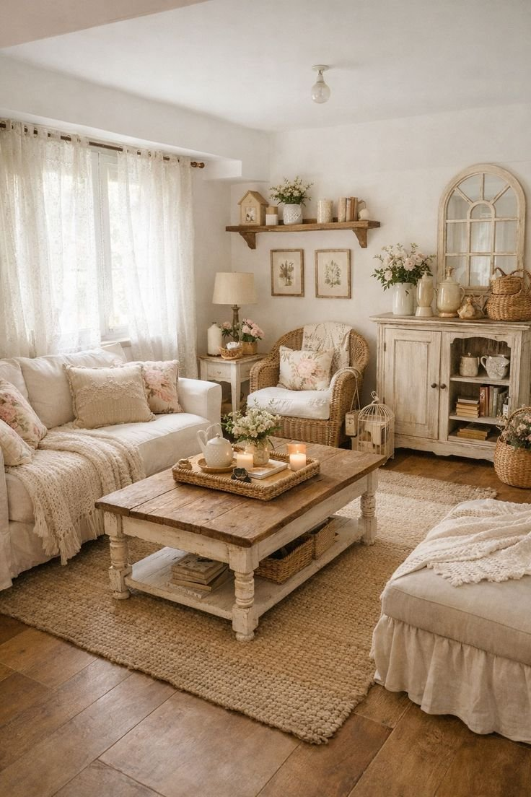
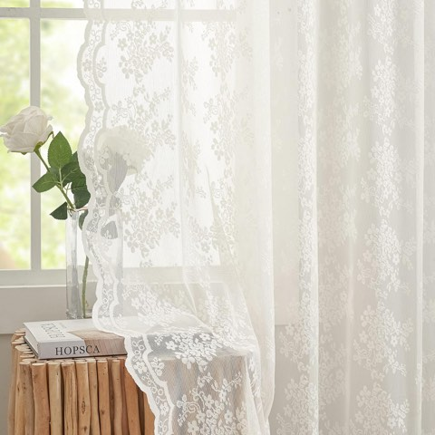
YJ YANJUN Vintage Lace Curtains, 84 Inches Long, Ivory Floral Sheer Panels
Shop on AmazonWhy It Works So Well in Ordinary Homes
None of this requires an actual stone cottage.
It works in rented apartments and boxy bedrooms just as well, because the style is genuinely forgiving, mismatched furniture is a feature, a chipped jug is a feature, a stack of books doubling as a side table is a feature.
Minimalism punishes stray objects.
This look thanks you for them.
Layering soft textiles and warm color also makes a cramped room feel cozy rather than cramped, which matters more in a small home than a large one.
A cottagecore palette generally runs warm whites and creams with a yellow base rather than blue, soft sage-to-olive greens borrowed from the garden, muted earth tones like clay and oatmeal, and one gentle accent color kept to small doses, dusty rose, butter yellow, faded denim.
A whole room of bold pink stops being charming fast.
Keep the drama in the details instead.
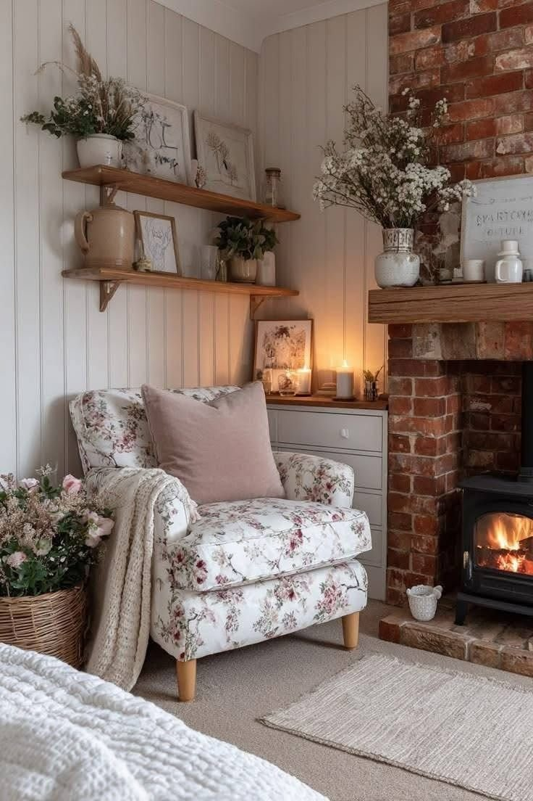
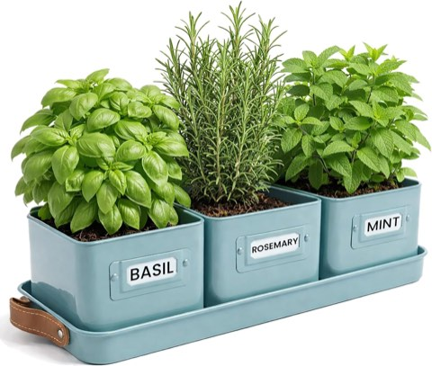
volila Indoor Herb Planter, Set of 3 Teal Blue Herb Garden Pots with Tray
Shop on Amazon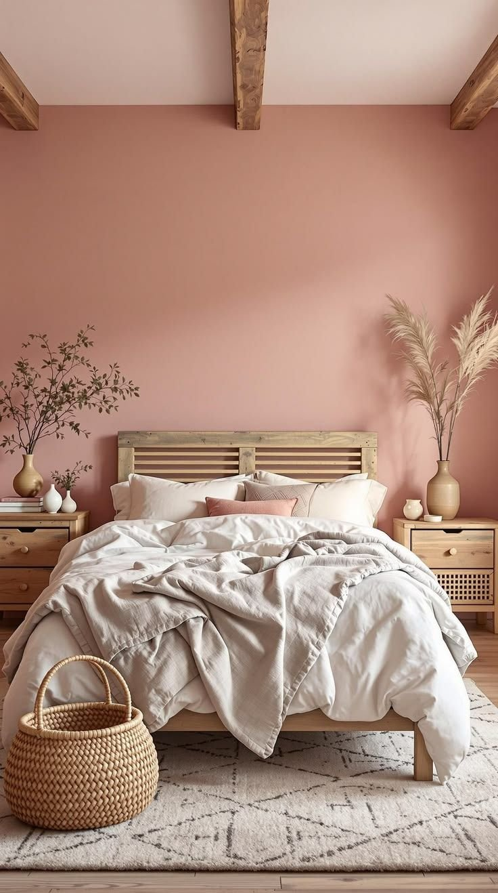
What Cottagecore Style Actually Means
Cottagecore started online as an aesthetic about slow, rural, homemade living, baking bread, growing herbs, mending clothes, sitting by a window with tea going cold.
The decorating side simply borrows that feeling and puts it into a room.
It is not a shopping list.
It is a mood built on natural materials, soft aged color, visible handwork, and a little controlled mess.
People confuse it constantly with modern farmhouse (crisp, graphic, white walls and black frames) and shabby chic (pale and distressed, chalk paint, white on white).
Cottagecore leans warm and green instead, deeper color, small florals, real plants, and objects that show actual use rather than fake wear.
The quickest test: if everything matches, it is farmhouse.
If everything is the same chalky white, it is shabby chic.
If it looks like someone gardens and cooks there, it is cottagecore.
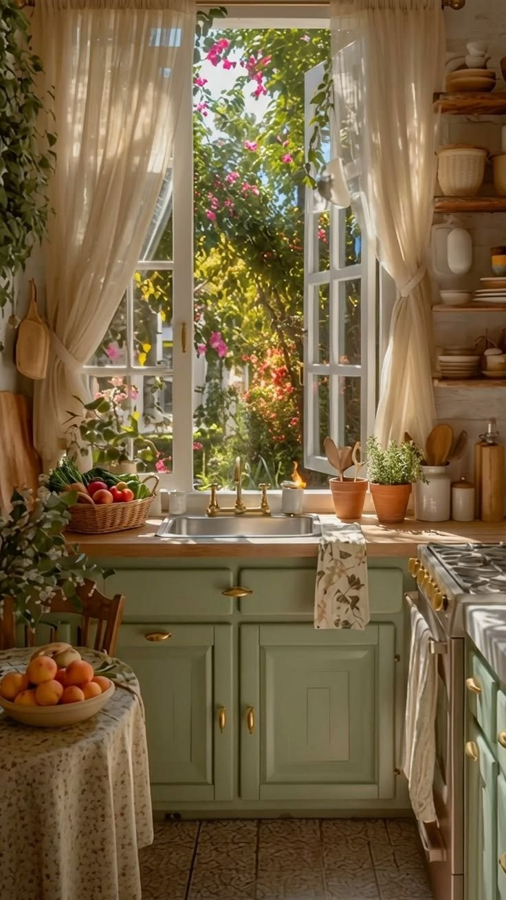
Colorantic Chalk Paint for Furniture, Sage Green, Multi-Surface
Shop on Amazonvolila Indoor Herb Planter, Set of 3 Teal Blue Herb Garden Pots with Tray
Shop on Amazon13 Ways to Bring Cottagecore Style Into Your Home
1. Make One Corner a Small Daily Ritual
A tea station with a kettle and loose-leaf tins.
A bread board that stays out on the counter.
A pot of herbs by the kitchen window that actually gets snipped from on a regular basis.
This is the idea most people skip, and it is the one that matters most.
Cottagecore is a lifestyle aesthetic at its core, so a room with no evidence of slow living on display just looks like a props cupboard.
A tea corner with hanging floral mugs, loose-leaf jars, honey, and fresh flowers is proof that the ritual itself is the decor, not something added on top of it afterward.
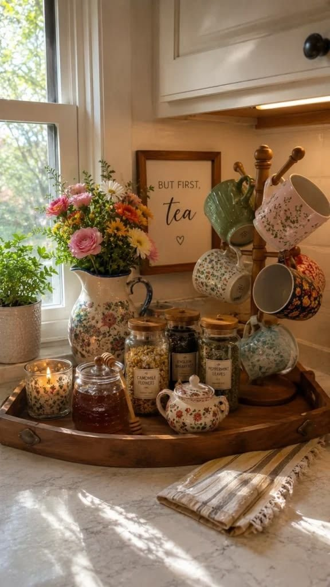
2. Add Gathered and Ruffled Fabric
A skirted side table, a gathered curtain, a ruffled cushion edge, a bed skirt, soft gathered fabric is the specific detail that separates cottagecore from plain rustic.
It also happens to be useful.
A skirted table conceals exactly the kind of clutter, a router, chargers, a stack of paperwork, that would otherwise sit in full view.
A gingham-skirted vanity table paired with an antique tri-fold mirror is a genuinely good example of a detail doing double duty: decorative and quietly functional at once.
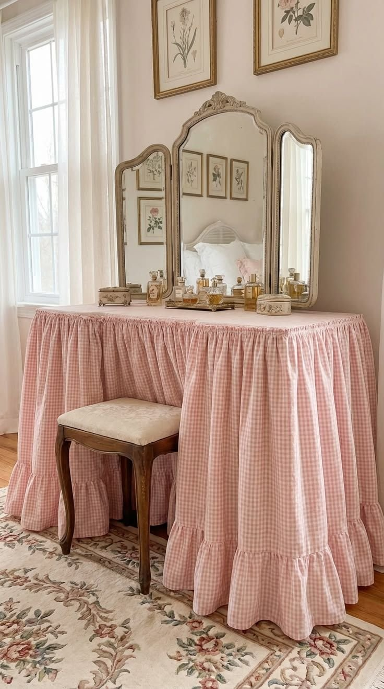
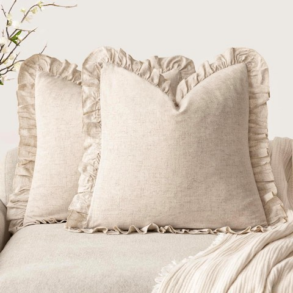
Foindtower Linen Fringe Ruffle Throw Pillow Covers, 18 x 18 Inch, Natural Beige
Shop on Amazon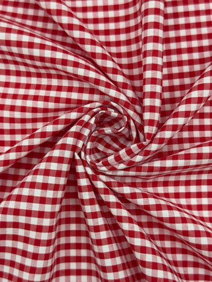
EOVEA Poly Cotton Gingham Checkered Fabric, 60 Inch Wide, 1/8 Inch Plaid
Shop on Amazon3. Fill the Walls With Botanicals, Books, and Old Frames
Frame pressed flowers, vintage seed packets, botanical prints, or your own garden photos.
Mix frame styles rather than buying a matching set, uniformity works against this look on walls just as much as it does with furniture.
Books count as decor here too.
Stack them horizontally, leave them out on side tables, let them genuinely pile up.
A cottagecore room with no books anywhere looks like a stage set rather than a home.
A dense gallery of pressed-flower frames and botanical prints above a simple bench brings the garden indoors in exactly the way this style is built around.
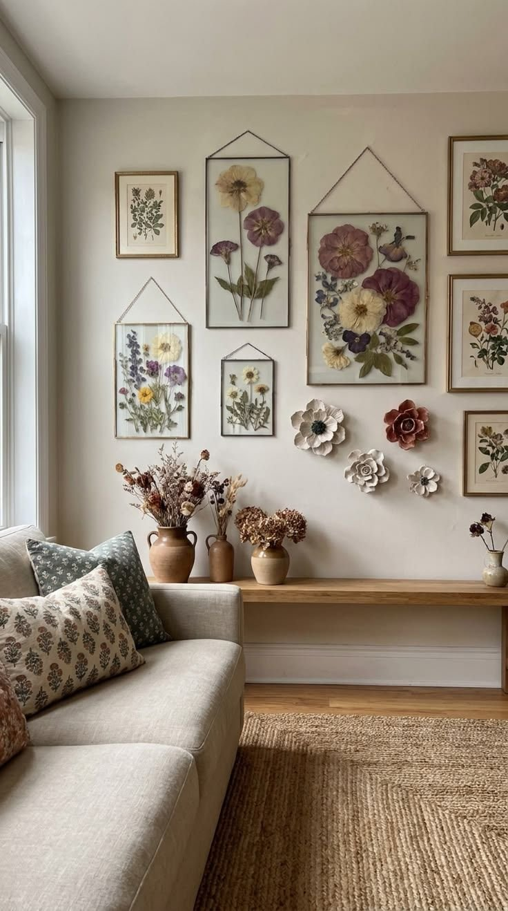
4. Build a Reading Nook, Even a Small One
You do not need a bay window for this.
A chair in a corner, a small side table, a lamp, and a folded blanket is genuinely enough to make it work.
This is the point where cottagecore stops being a look and starts being a way to actually use your home.
The corner you sit in every day becomes the prettiest corner almost by accident, simply because objects gather where you live.
A window-side armchair layered with a floral pillow, a knit throw, a book, and a warm cup of tea is the clearest version of that idea in practice.
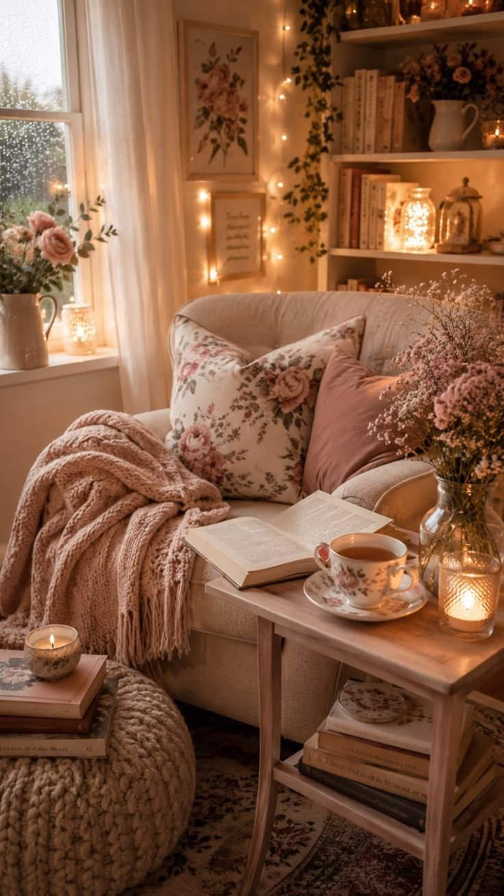
5. Layer Your Lighting and Skip the Ceiling Light
Overhead lighting flattens everything it touches.
Table lamps, floor lamps, and candles are what create the pools of warm light that actually make a cottage room feel alive.
Aim for roughly three light sources per room at different heights, and add a dimmer where you can.
A living room with enough lamps genuinely never needs its overhead light switched on again.
An ornate lamp glowing beside a cluster of candles and dried lavender is the kind of warm, layered light this whole style is quietly built around.
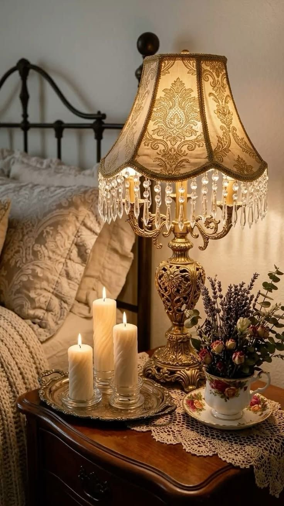
6. Choose Wood Furniture With Visible Grain
Cottagecore has no patience for uniform factory finishes.
Look for pine, oak, and elm where you can actually see the knots and marks in the wood.
Mismatched is correct here, not a mistake to fix.
A dark dresser, a honey pine table, and a painted chair can absolutely share one room, match the tones loosely, not exactly, and let them sit in gentle contrast.
A dining set mixing a rich wood tabletop with painted sage green chairs and cabinet is exactly the kind of considered mismatch that reads as collected rather than careless.
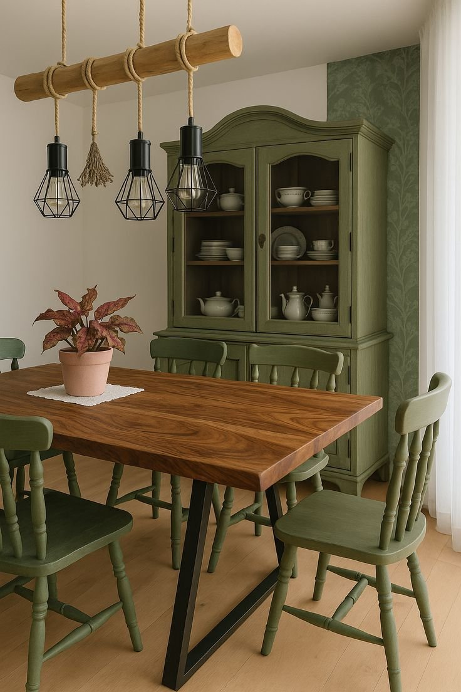
7. Hang Dried Flowers and Herb Bundles
Dried hydrangea, lavender, eucalyptus, wheat, hang them from a hook, tuck them into a jug, tie a bundle to a cabinet knob.
It is one of the fastest, cheapest cottagecore moves available.
The honest caveat: dried flowers look wonderful for about six months and genuinely depressing after that.
Refresh them seasonally, or they turn into grey dust sculptures nobody actually wants hanging around.
A shelf dense with hanging herb and flower bundles above fresh ones in a vase is the kind of layered abundance that reads as effortless even though it is not.
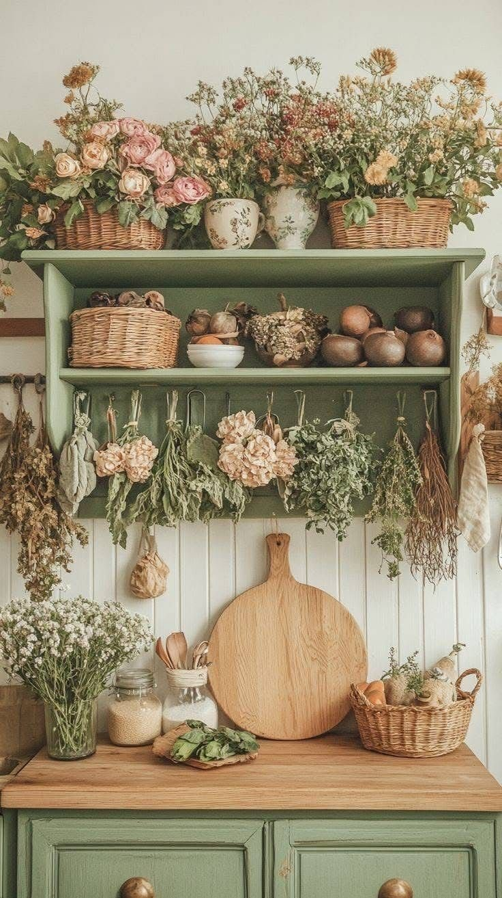
L'BREVOGA Dried Flower Bouquets, Preserved Pink Baby's Breath with Eucalyptus
Shop on Amazon8. Open Up a Shelf With Stoneware You Actually Use
Take one upper cabinet door off in the kitchen and see how it feels.
Stack plain stoneware plates, mismatched mugs, and a couple of glass jars of dried beans, nothing precious, just what you actually reach for.
The key is keeping it functional.
The moment open shelves turn purely decorative, dusting becomes a new hobby, and not a good one.
Shelves lined with everyday mugs, jars, and a potted herb or two prove that practical and pretty are not actually in conflict in this style.
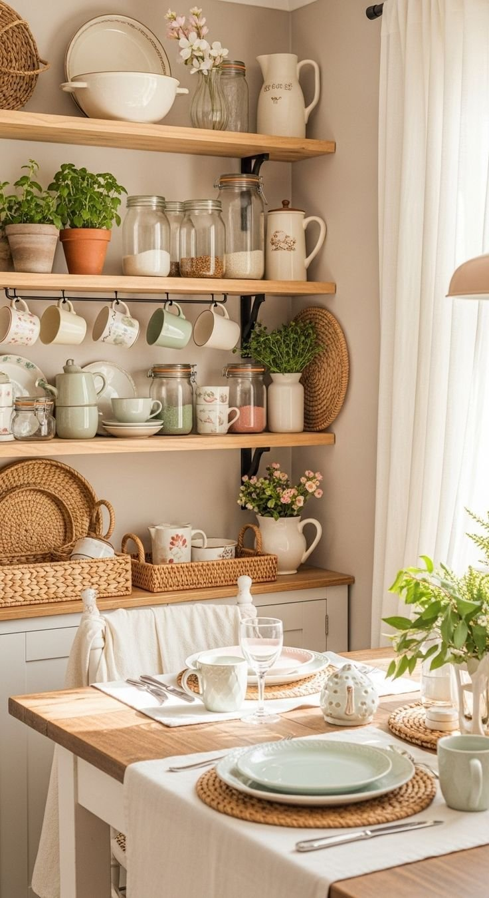
ComSaf Large Square Glass Jars with Airtight Lids, 78 oz, 3 Pack
Shop on Amazon9. Layer Vintage Textiles Everywhere
Quilts, linen throws, crocheted blankets, old cotton tea towels, cottagecore style genuinely lives and dies by fabric more than almost any other single element.
The trick is layering different weights together: a heavy quilt folded at the foot of the bed, a lightweight linen sheet underneath, two or three cushions in mismatched but related prints.
Buy vintage where it is available.
Old cotton and linen soften with age in a way new polyester simply never will, and a secondhand quilt often costs less than a new cushion cover.
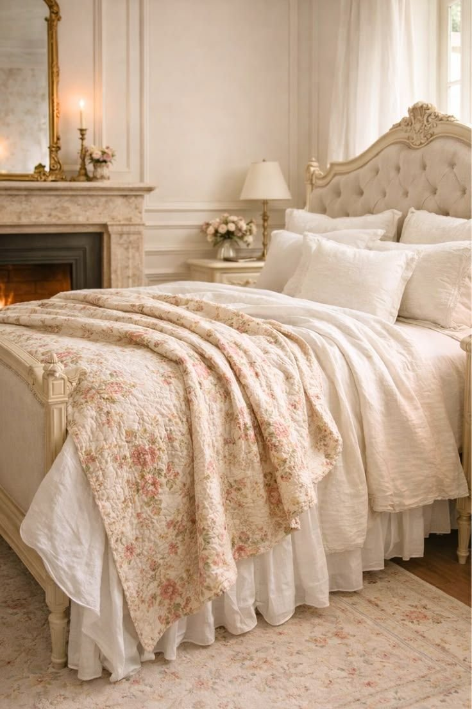
10. Swap Your Hardware for Aged Brass or Black Iron
This is the cheapest upgrade with the single biggest payoff on this entire list.
Shiny chrome knobs fight the whole cottagecore look no matter what else is happening in the room.
Unlacquered brass, aged bronze, or simple black iron fixes it in an afternoon, and nobody consciously notices good hardware, but everybody notices bad hardware.
A kitchen fitted with warm brass cup pulls, a brass faucet, and a brass rail beneath open shelves shows how much one consistent metal finish can quietly pull a whole room together.
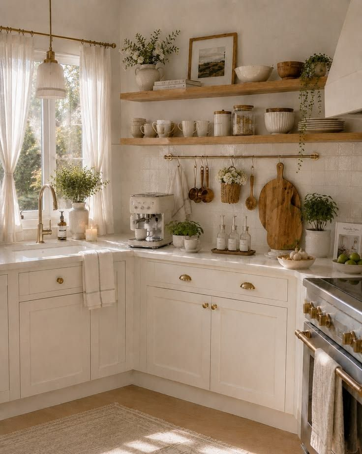
khtumeware Solid Unlacquered Brass Cup Drawer Pulls, 3 Inch, 5 Pack
Shop on Amazon11. Let Real Plants Do the Decorating
Nothing signals cottagecore faster than actual living green in a room.
A trailing pothos on a shelf, geraniums on a windowsill, herbs kept by the sink, all of it works.
The honest rule worth following: buy plants that survive you, not plants that photograph well.
Anything killed twice gets permanently crossed off the list, a policy that saves real money in dead ferns over time.
A windowsill crowded with potted bulbs and hanging blooms framed by floral curtains is the kind of detail that makes a whole room feel alive rather than just decorated.
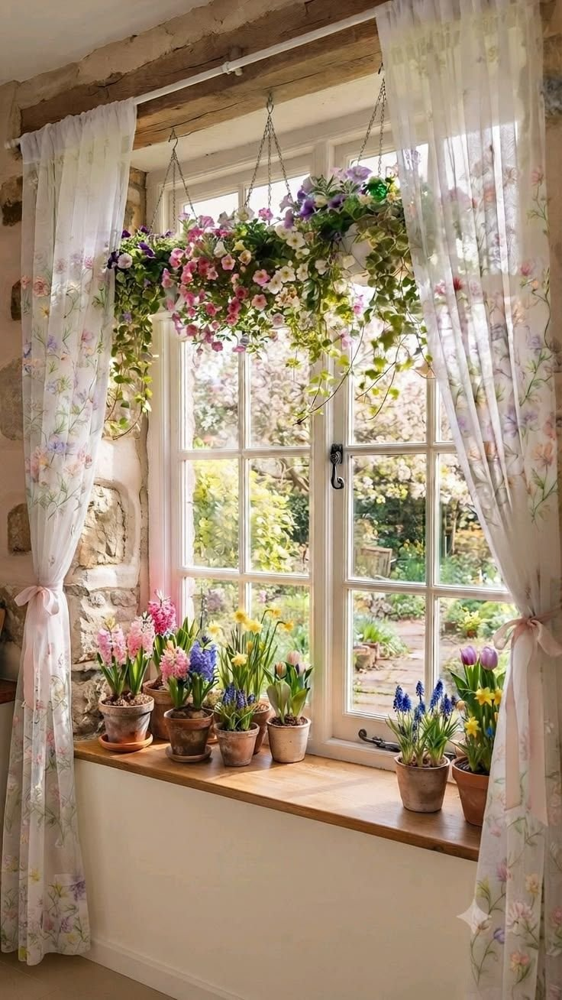
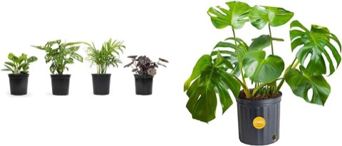
Altman Plants Classic Houseplant Collection, 4 Pack, Live Indoor Plants
Shop on Amazon12. Bring In Small-Scale Florals, Not Giant Ones
Big, splashy florals read modern or tropical.
Small, repeating prints read cottage, think ditsy sprigs, tiny roses, faded chintz rather than anything bold enough to dominate a room.
Start low-commitment: a cushion cover, a table runner, one armchair.
Wallpapering an entire room in florals as a very first move is a genuinely common and genuinely regrettable mistake.
A sheer floral curtain layered over small-print bedding and ruffled pillows shows exactly how far a restrained floral choice can carry a room on its own.
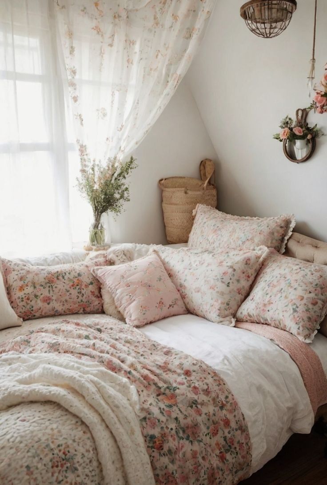
13. Choose a Green-Toned Cottage Palette, Not Just White
Pure brilliant white is actually the enemy of this look, even though it is the first thing most people reach for.
A white with a hint of cream, clay, or green reads as soft rather than clinical.
For rooms you want to feel like a nest rather than just bigger, lean into a deeper tone entirely, sage, olive, or a dusty green on walls, furniture, or trim does more for the cottage feeling than any shade of white ever will.
A bedroom with green-painted furniture, lace curtains, and a wall of botanical prints proves the point better than a swatch chip could.
Warm and green beats cold and white every time in this style.
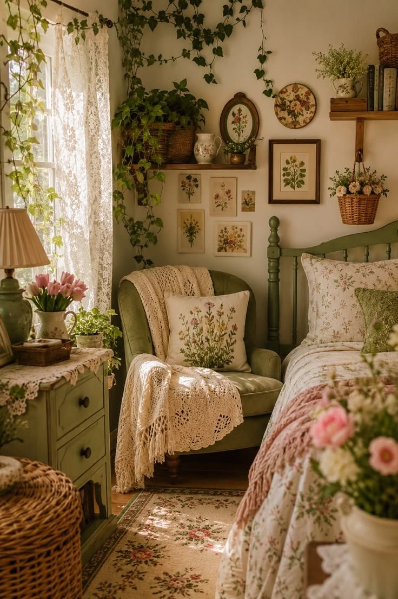
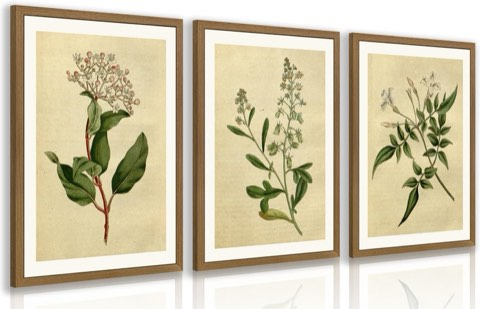
RLKHG Wood Framed Vintage Botanical Wall Art Set of 3, Herbarium Plant Prints
Shop on AmazonFinal Thoughts
None of this needs a literal cottage, a garden, or a sourdough starter with a name.
It needs warm color, natural materials, layered soft lighting, real plants, and objects that show honest wear.
Pick three ideas from this list and try them this week, swap the bulbs, add a lamp, put something green on the windowsill, then live with it before buying anything else.
And if it does end up as three lavender bundles and a milk jug, at least it will be obvious which two to put away.
The whole style rewards patience more than any single purchase.
A room built slowly, one real object at a time, will always feel more convincing than one filled in a single weekend trip to a shop.